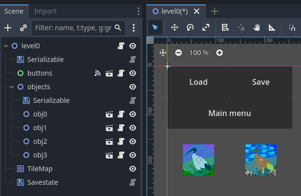

Godot Save/Load Game State
Index
Explanation
Tutorial
Method descriptions
File format
Explanation
Any save game system works by taking all of the information stored by the game objects, packs them in such a way that they can be saved to the disk and afterwards it can be retrieved from the disk and repopulate that information back into the game objects or levels.
This system is designed in such a way so any kind of game would be able to use it. This is done by enforcing a small amount of constraints on how the levels and the objects should be stored on the disk.
The plugin introduces a new Godot game object called a Savestate, which is also tied to a filename and is able to store the game state at any given point in time. You can add variables to this save state, or you can add levels. If you have multiple levels in your game, it can also save separate entries for each of the levels. The constraint done on the levels is that all levels should contain collections, and the collections are the actual Node that contains the game objects. For example a level could have a collection of bullets and the collection of enemies and maybe the save game wouldn't save the bullets, but it is important that all game objects are children to one of these Node object. The node object we are talking about is either a Node, Spatial or Node2d, depending on the use case and how the game objects are being used, but it's very important to be grouped as such.
Marking an object to be saved to the disk is done by simply declaring which variables need to be saved. This is done by creating a serializable variable and add inside of it the names of the variables that need to be saved into the save file. In the same manner the levels will have a serializable_collections is variable that needs to be populated with the names of the collections.
After the Savestate object has been informed on which variables and objects needs to be saved, by just calling a simple function, detailed below, that state is saved to the disk and later on it can be loaded, all that information ready to be repopulated in the original objects.
Because the system is also capable of handling variables which are not tied to levels or objects, means that the system can also be used to save the configuration of the game itself. As previously mentioned the only thing that needs to be done is to mark the relevant variables and pack them to the Savestate.
Tutorial
This tutorial is not supposed to explain the more complicated cases where the game would have multiple maps, open world or other special settings. The tutorial is destined to explain the most basic use case, which means saving variables and saving object states.
First of all we will need to have a scene for the level itself, that has buttons meant to be clicked in order to load & save. This level scene will contain one collection (which is a Node2D in this example) that will contain the objects that we want to save.

The buttons node contains buttons that when clicked will trigger the load & save functions. Node name objects contains the objects that will get serialized and saved in the file. Any changes to these will be saved.
Node called Savestate is the one which is responsible for loading and saving the data. For this to work, we first need to input the filename of the save first by completing the field in the Inspector.
(This can also be done programatically by changing the variable save_filename of the Savestate node)

Here is the code that will handle the events from the load & save buttons:
extends Node2D
# declare that all game objects from the collection called objects should be saved
const serializable_collections = [
"objects"
]
# when the load button is pressed
func _on_buttons_load_pressed():
# first load the state of the game from the disk
$Savestate.load_game_state()
# unpack that state loaded into this scene
# this will remove all the objects from the node objects
# and will populate it with the objects as written in the file on disk
$Savestate.unpack_game_state(self)
func _on_buttons_save_pressed():
# first you need to load the state on the disk
# this is needed because there might be information about other game states
$Savestate.load_game_state()
# this appends the current level node's data to the game state
$Savestate.pack_game_state(self)
# finally it is saved to the disk
$Savestate.save_game_state()Method descriptions
visited_level(level)
Returns a boolean indicating whether a level has been visited.
Input: level - the level object to check
Output: Boolean
clear_level_history(level_filename)
Removes the given level history from the current game state.
Input: String - the level filename
save_exists()
Returns a boolean indicating whether a save file exists.
Output: A boolean indicating whether the save file exists
pack_game_state(level)
Adds the given level to the current game state. It does this by serializing the level, adding all the variables registered in serializable and/or collections registered in serializable_collections.
Input: level - the level object to add to the game state
unpack_game_state(level)
Restores the state of the given level from the current game state. The variables in this object will be overwritten and collections will be repopulated.
Input: level - the level object to restore the state for
set_game_variables(node)
Adds variables of the given node to the current game state.
Input: node - the node whose variables to save to the game state
get_game_variables(node)
Restores the variables of the given node from the current game state.
Input: node - the node whose variables to restore from the game state
load_game_state(game_version = "default")
Loads the game state from a save file. This will overwrite the current game state, this means that any packing done before calling this function will be lost, packing should be done after a load to append new map data to a save. Optionally a version of the game can be provided, by default the game version is "default". This is useful if the object format has changed for the game and not compatible with older versions
Input: game_version - the version of the game state to load (optional, default value is "default")
save_game_state(game_version = "default")
Saves the current game state to a save file.
Input: game_version - the version of the game state to save (optional, default value is "default")
File format
{}The system saves and loads game state data in a specific format defined in a JSON-like file.The game state data is stored in a dictionary-like structure with the top level key being a version name string "$version_name". Each version name points to a dictionary containing two keys, "variables" and "maps".The "variables" key holds information about game-wide variables and their values.The "maps" key is also a dictionary that holds information about saved map state data. Each key within the "maps" dictionary is a string representing the file name of the map in the format of "$map_file_name.tscn". The value of each key is another dictionary that holds information about the saved state of the map.This map dictionary has two keys, "collections" and "objects". The "collections" key holds information about the state of various object collections in the map. The "objects" key holds information about individual objects within the map.Each object in the "collections" or "objects" keys is represented by a dictionary with several keys. The "type" key is a string indicating the type of object being saved. The "name" key holds the name of the object as a string. The "filename" key holds the file name of the object as a string. The "transform" keys hold information about the object's position, scale, and rotation. The "variables" key holds a dictionary of object-specific variables and their values.Each variable within the "variables" key of an object is also represented by a dictionary with a "type" key indicating the type of the variable and other keys holding the value of the variable. The supported types of variables include a normal numeric or boolean value, "object", "vector2", "vector3", "color", "transform", "object" and "array". The array variable can contain any of the other types recursively.